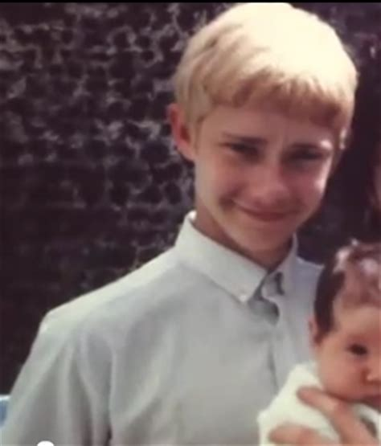

ABOUT MARTIN

Birth
Freeman was born on September 8th, 1971, in Aldershot, Hampshire, the youngest of five children. His parents, Philomena (née Norris) and Geoffrey Freeman, a naval officer, separated when Freeman was a child. When Freeman was 10 years old, his father died of a heart attack.
Career
Freeman attended the Central School of Speech and Drama and has appeared in at least 18 TV shows, 14 theatre productions, and several radio productions.
Personal Life
Freeman lived in Potters Bar in Hertfordshire with his partner, actress Amanda Abbington. The couple have two children together. They have appeared in other productions together, including Sherlock, Swinging with the Finkels, The Debt, The Robinsons, and The All Together. On 22 December 2016, Freeman announced in an article in the Financial Times that he and Abbington had separated. Freeman is a pescetarian. He has said his Catholic faith remains intact. In 2011, Freeman took part in a charity cricket match to raise money for victims of the Christchurch earthquake. Freeman has been an outspoken supporter of the Labour Party. As a teenager, he supported Britain's now-defunct Militant political group and volunteered with the Labour Party Young Socialists. In 2015, Freeman appeared in a party election broadcast to endorse the Labour party ahead of the 2015 UK general election. In August 2015, he endorsed Jeremy Corbyn's campaign in the Labour Party leadership election. In a session at the Edinburgh International Television Festival he said: "I happen to think that he is the most impressive one of the four. I do." He added that Corbyn was the "most impressive one as an individual".
Major Roles
The Office
The Office is a British mockumentary sitcom, first broadcast in the United Kingdom on BBC Two on 9 July 2001. Created, written and directed by Ricky Gervais and Stephen Merchant, the programme is about the day-to-day lives of office employees in the Slough branch of the fictitious Wernham Hogg Paper Company. Gervais also stars in the series, playing the central character, David Brent. Two six-episode series were made, along with a pair of 58-minute Christmas specials. When it was first shown on BBC Two, it was nearly cancelled due to low ratings, but it has since become one of the most successful of all British comedy exports. As well as being shown internationally on BBC Worldwide, channels such as BBC Prime, BBC America and BBC Canada, the series has been sold to broadcasters in over 80 countries, including ABC1 in Australia, The Comedy Network in Canada, TVNZ in New Zealand and the pan-Asian satellite channel STAR World, based in Hong Kong. The show began airing in The United States on Cartoon Network's late night programing block, Adult Swim on 18 September 2009 until 2012. The show centres on themes of social clumsiness, the trivialities of human behaviour, self-importance and conceit, frustration, desperation and fame. The success of the show led to a number of localised adaptations (based upon its basic story and themes) being produced for the television markets of other nations, resulting in an international Office franchise.
Sherlock
Sherlock is a crime drama television series based on Sir Arthur Conan Doyle's Sherlock Holmes detective stories. Created by Steven Moffat and Mark Gatiss, it stars Benedict Cumberbatch as Sherlock Holmes and Martin Freeman as Doctor John Watson. Thirteen episodes have been produced, with four three-part series airing from 2010 to 2017, and a special episode that aired on 1 January 2016. The series is set in the present day, while the one-off special features a Victorian period fantasy resembling the original Holmes stories. Sherlock is a co-production of the British network BBC and the American station WGBH Boston for its Masterpiece anthology series on PBS, along with Hartswood Films, with Moffat, Gatiss, Sue Vertue and Rebecca Eaton serving as executive producers. The series is primarily filmed in Cardiff, Wales, with North Gower Street in London used for exterior shots of Holmes and Watson's 221B Baker Street residence. Sherlock has received critical acclaim, with many reviews praising the quality of the writing, performances, and direction. Sherlock has been nominated for numerous awards including Emmys, BAFTAs and a Golden Globe, winning several awards across a variety of categories. The show won in three categories at the 66th Primetime Emmy Awards including Outstanding Lead Actor in a Miniseries or a Movie for Cumberbatch, Outstanding Supporting Actor in a Miniseries or a Movie for Freeman and Outstanding Writing for a Miniseries, Movie or a Dramatic Special for Moffat. Two years later, it won Outstanding Television Movie. In addition, the show was also honoured with a Peabody Award in 2011.[5] The third series has become the UK's most watched drama series since 2001. Sherlock has been sold to 180 territories.
The Hobbit Trilogy
The Hobbit: An Unexpected Journey is a 2012 epic high fantasy adventure film directed by Peter Jackson. It is the first installment in a three-part film adaptation based on the 1937 novel The Hobbit by J. R. R. Tolkien. It is followed by The Desolation of Smaug (2013) and The Battle of the Five Armies (2014), and together they act as a prequel to Jackson's The Lord of the Rings film trilogy. The film's screenplay was written by Peter Jackson, his longtime collaborators Fran Walsh and Philippa Boyens, and Guillermo del Toro, who was originally chosen to direct the film before leaving the project in 2010. The story is set in Middle-earth sixty years before the events of The Lord of the Rings, and portions of the film are adapted from the appendices to Tolkien's The Return of the King.[6] An Unexpected Journey tells the tale of Bilbo Baggins (Martin Freeman), who is convinced by the wizard Gandalf (Ian McKellen) to accompany thirteen Dwarves, led by Thorin Oakenshield (Richard Armitage), on a quest to reclaim the Lonely Mountain from the dragon Smaug. The ensemble cast also includes James Nesbitt, Ken Stott, Cate Blanchett, Ian Holm, Christopher Lee, Hugo Weaving, Elijah Wood and Andy Serkis, and features Sylvester McCoy, Barry Humphries and Manu Bennett. An Unexpected Journey premiered on 28 November 2012 in New Zealand and was released internationally on 12 December 2012. The film has grossed over $1 billion at the box office, surpassing both The Fellowship of the Ring and The Two Towers nominally, becoming the fourth highest-grossing film of 2012 and the 31st highest-grossing film of all time. Receiving mixed to positive reviews from critics, the film was nominated for three Academy Awards for Best Visual Effects, Best Production Design, and Best Makeup and Hairstyling. It was also nominated for three British Academy Film Awards.
Fargo
Fargo is an American black comedy–crime drama anthology television series created and primarily written by Noah Hawley. The show is inspired by the eponymous 1996 film written and directed by the Coen brothers, who serve as executive producers on the series alongside Hawley. The series premiered on April 15, 2014, on FX,[1] and follows an anthology format, with each season set in a different era, and with a different story and mostly new characters and cast, although there is minor overlap. Each season shares a common chronology with the original film. The first season, set in 2006 and starring Billy Bob Thornton, Allison Tolman, Colin Hanks, and Martin Freeman, was met with critical acclaim.[2] It won the Primetime Emmy Awards for Outstanding Miniseries, Outstanding Directing, and Outstanding Casting, and received 15 additional nominations including Outstanding Writing, another Outstanding Directing nomination, and acting nominations for all four leads. It also won the Golden Globe Awards for Best Miniseries or Television Film and Best Actor – Miniseries or Television Film for Thornton.